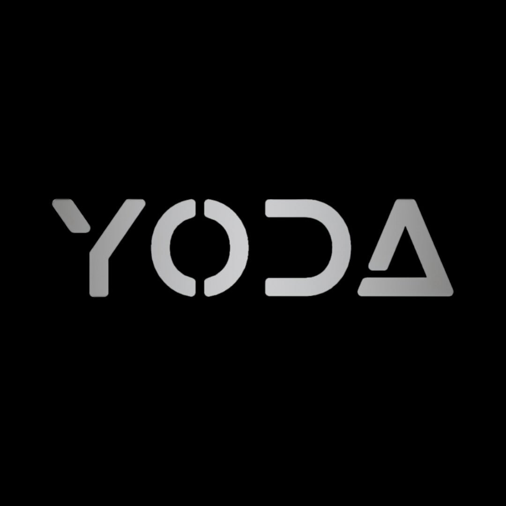
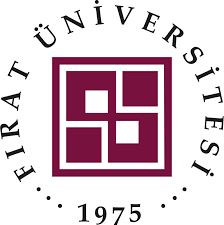
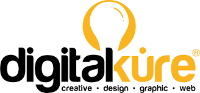
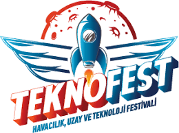
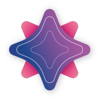
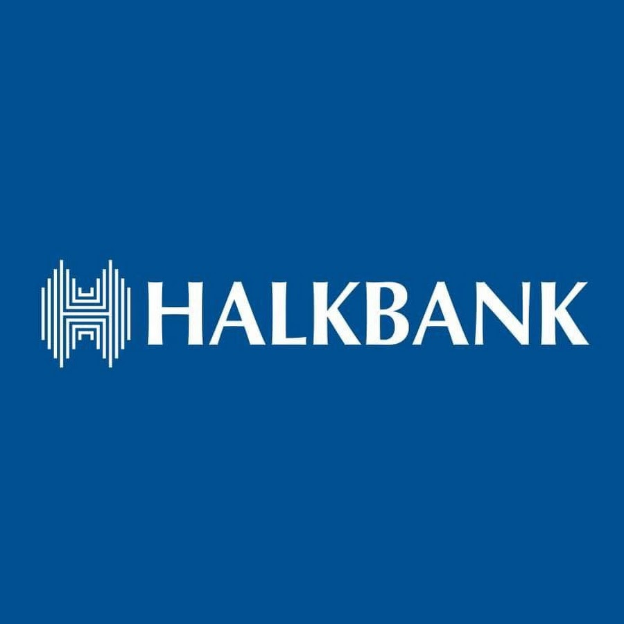

Experience
Oct 2025 – Present
AI Software Developer

YTU YODA Autonomous Team
- Developing perception pipeline for TEKNOFEST Robotaksi autonomous vehicle competition
- Lane detection, traffic sign recognition, multi-sensor fusion
- Tech: Python, PyTorch, OpenCV, ROS, Docker
Jul 2025 – Dec 2025
Mentor Leader

YetGen Community (1200+ members)
- Leading 1200+ member AI and technology community in Turkey
- Organizing workshops, mentorship programs, and leadership initiatives
- Building ecosystem for next-generation tech leaders and innovators
Jun 2025 – Dec 2025
AI Research Intern

Fırat Üniversitesi (Prof. Dr. Mehmet Kaya)
- Designed multimodal fusion model combining chest X-ray images and clinical text for lung cancer detection
- Implemented Grad-CAM explainability; paper accepted to FET'26 conference
- Tech: PyTorch, HuggingFace, Grad-CAM, W&B
2024 – Present
Freelance AI & Web Developer
Upwork
- N8N workflow automation, AI agents, LLM-powered chatbots
- Full-stack web development and AI model deployment
- Tech: Python, JavaScript, FastAPI, N8N, LLMs
Oct 2023 – Nov 2024
Lead Organizer
Google Developer Student Clubs (ITER)
- Organized workshops, hackathons, and technical talks for 200+ students
- Led development community initiatives and mentorship programs
- Focus: AI, Web Development, Cloud Technologies
Aug – Oct 2024
Full-Stack Development Intern

Dijital Küre Yazılım
- React.js frontend, Node.js backend, NLP chatbot projects
- Full-stack web application development
- Tech: React, Node.js, NLP, Python
Aug – Sep 2024
NLP Intern
YONKA Soft
- NLP model development and preprocessing pipeline design
- Text analysis and language understanding projects
- Tech: NLTK, spaCy, Python
2022 – 2025
AI Developer & Project Lead

TEKNOFEST (3x National Finalist)
- AgroScan AI (2023): CNN-based plant disease detection (90%+ accuracy)
- X-Ray Analysis (2024): Multimodal fusion for chest imaging
- Led teams of 5-8 people, managed end-to-end ML pipelines, achieved national recognition
Sep – Nov 2023
Project Manager & Developer
NASA App Challenge
- Managed team for space-tech hackathon competition
- Integrated NASA APIs and satellite data for Earth observation
- Tech: Python, API Integration, Data Analysis
Sep – Nov 2023
Project Manager

Yıldız Yapay Zekâ (AI Community)
- Managed AI projects and initiatives for community of 500+ members
- Coordinated technical workshops and research discussions
- Focus: Computer Vision, NLP, Deep Learning
Jun – May 2024
Community Manager
Yıldız Yapay Zekâ (AI Community)
- Built and managed active AI/Tech community (500+ members)
- Organized seminars, study groups, and networking events
- Fostered collaboration between students and industry professionals
Jul – Aug 2023
Technology Intern

Halkbank A.Ş.
- Digital transformation and banking technology projects
- Exposure to enterprise-scale software and financial systems
- Tech: Enterprise Systems, Finance Tech